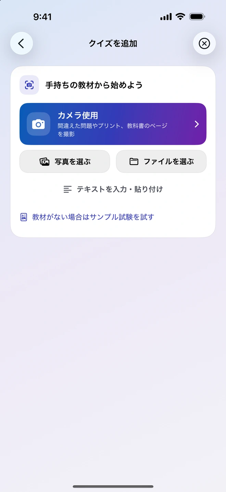
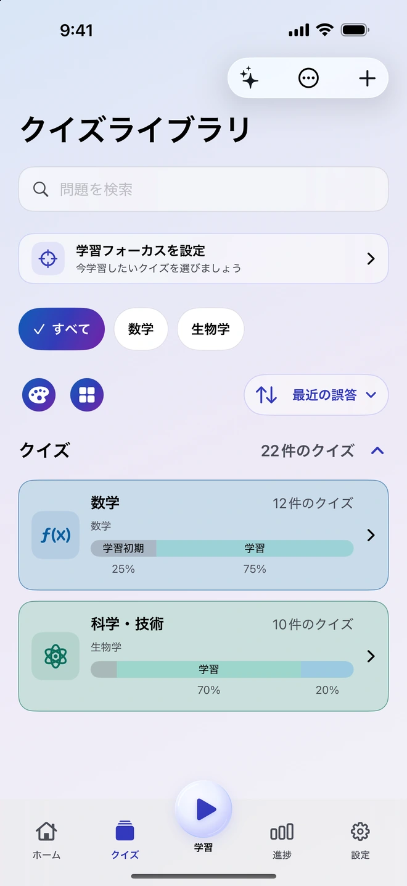
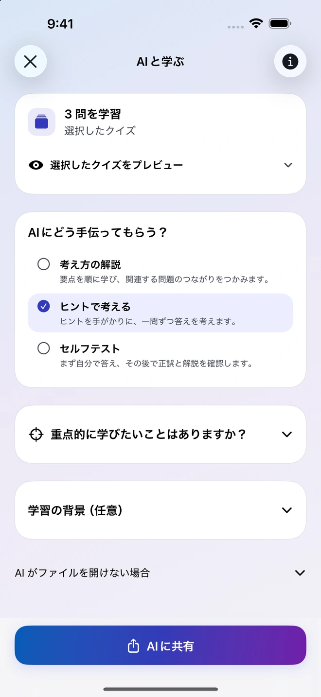
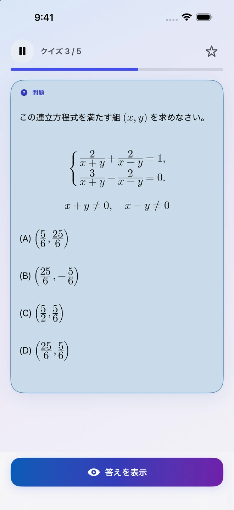
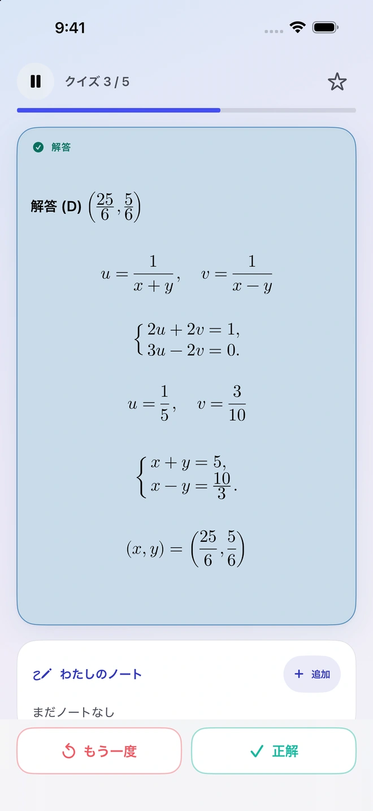
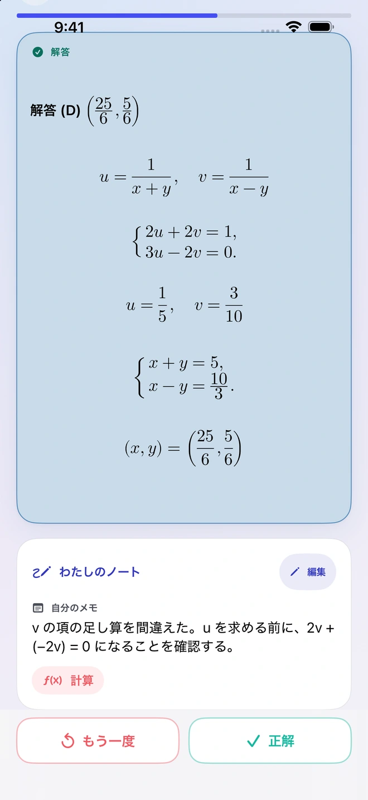
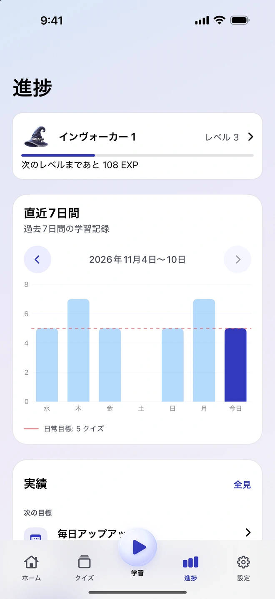

教材から問題を作る
写真、PDF、書類、メモを追加します。Quiz Invokerが教材と出題の指示を用意するので、対応する外部AIアプリを選んで共有できます。返ってきた問題を確認し、使いたいものをライブラリに取り込みましょう。
iPhoneの学習アプリ
教科書の1ページ、授業のメモ、あるいは間違えた問題から始めましょう。Quiz Invokerに教材を取り込み、残したい問題を確認して、次の学習に使えます。
使い方を見る

自分に必要な問題を集めて、時間を置いて繰り返し取り組みましょう。
写真、PDF、書類、メモを追加します。Quiz Invokerが教材と出題の指示を用意するので、対応する外部AIアプリを選んで共有できます。返ってきた問題を確認し、使いたいものをライブラリに取り込みましょう。
選んだ問題を、使いたい外部AIアプリに共有します。考え方の解説や段階的なヒントを頼んだり、理解度を確かめたりできます。送るファイルやメモは自分で選べます。

自分で解いてから解答を表示し、どれだけ思い出せたかを振り返ります。つまずいた箇所をメモしておけば、次に同じ問題を解くときに役立ちます。


進捗画面では、最近7日間の学習量と毎日の目標を確認できます。メモは問題に残るので、解答と当時の考え方を一緒に振り返れます。


Quiz Invokerのアカウントを作らなくても、問題の整理や学習をオフラインで行えます。共有用のファイルや指示は端末内で用意され、送信した教材のAI処理は選んだ外部アプリで行われます。